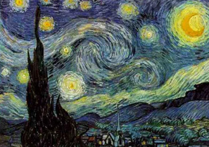

Ένας διαδραστικός οδηγός για την τάξη και το σπίτι, σε 7 βήματα. Κάθε βήμα έχει μια δραστηριότητα (παιχνίδι, προσομοίωση ή κουίζ) που δείχνει στην πράξη κάτι από τη διάλεξη: τι είναι η τεχνητή νοημοσύνη, πώς μαθαίνει μια μηχανή από δεδομένα, πώς «σκέφτεται» ένα γλωσσικό μοντέλο και τι σημαίνουν όλα αυτά για μια τουριστική επιχείρηση. Η πρόοδός σου αποθηκεύεται στον browser.
Η λέξη «AI» μπαίνει σήμερα παντού. Η διαφορά που μετράει είναι: ποιος έγραψε τους κανόνες. Στον κλασικό προγραμματισμό (classical programming) ένας άνθρωπος γράφει τους κανόνες και ο υπολογιστής τους εφαρμόζει. Στη μηχανική μάθηση (machine learning) ο υπολογιστής ανακαλύπτει τους κανόνες μόνος του μέσα από παραδείγματα.
Για καθεμία από τις παρακάτω λειτουργίες μιας τουριστικής επιχείρησης, διάλεξε τι κρύβεται από πίσω.
Θα σου δείξουμε μόνο δύο πίνακες με το όνομα του ζωγράφου. Αυτό είναι το σύνολο εκπαίδευσης (training set). Μετά θα δεις πέντε πίνακες χωρίς όνομα, το σύνολο δοκιμής (test set), και θα απαντήσεις ποιος τους ζωγράφισε.

Με δύο μόνο παραδείγματα, έφτιαξες στο μυαλό σου μια «φόρμουλα»: ο Monet έχει απαλά χρώματα και θολές άκρες, ο Van Gogh έντονα χρώματα και παχιές, στροβιλιζόμενες πινελιές. Μετά την εφάρμοσες σε εικόνες που δεν είχες ξαναδεί. Δεν ήσουν 100% σίγουρος, αλλά αρκετά.
Η μηχανική μάθηση κάνει ακριβώς το ίδιο: μαθαίνει μια φόρμουλα, το μοντέλο (model), από το σύνολο εκπαίδευσης, και την εφαρμόζει σε νέα δεδομένα για να κάνει προβλέψεις. Τη δοκιμάζουμε σε δεδομένα που δεν έχει ξαναδεί, για να δούμε αν έμαθε πραγματικά ή απλώς αποστήθισε.
Έχεις 600 κρατήσεις ενός ξενοδοχείου (προσομοιωμένες, αλλά με ρεαλιστικά μοτίβα). Για καθεμία ξέρεις: πόσες μέρες πριν έγινε (lead time), το κανάλι (OTA ή απευθείας), αν δόθηκε προκαταβολή, αν ο πελάτης είναι από το εξωτερικό, και την τιμή. Ξέρεις επίσης αν τελικά ακυρώθηκε.
Οι πρώτες 400 είναι το σύνολο εκπαίδευσης. Οι υπόλοιπες 200 είναι το σύνολο δοκιμής: εκεί μετράμε την ακρίβεια (accuracy), δηλαδή σε τι ποσοστό κρατήσεων η πρόβλεψη ήταν σωστή.
Ένα μεγάλο γλωσσικό μοντέλο (Large Language Model, LLM), όπως αυτά πίσω από το ChatGPT ή το Claude, κάνει στον πυρήνα του ένα πράγμα: δεδομένου του κειμένου μέχρι τώρα, υπολογίζει για κάθε λέξη πόσο πιθανή είναι να ακολουθεί, διαλέγει μία, την προσθέτει, και ξαναρχίζει.
Η παρακάτω μικρογραφία έχει μάθει «προτάσεις ξενοδοχείων» από ελάχιστα παραδείγματα. Πάτησε Επόμενη λέξη και παρακολούθησε τις πιθανότητες. Το πραγματικό μοντέλο κάνει το ίδιο με λεξιλόγιο 100.000+ λέξεων και δισεκατομμύρια παραμέτρους.
Αφού το μοντέλο συνεχίζει το κείμενο που του δίνεις, η ποιότητα της απάντησης εξαρτάται από το κείμενο που του δίνεις: το prompt. Ένα καλό prompt λέει στο μοντέλο ποιος μιλάει, σε ποια κατάσταση, τι θέλει να βγει και σε ποια μορφή.
Σύνθεσε ένα prompt για μια πραγματική ανάγκη του ξενοδοχείου και αντέγραψέ το σε όποιο εργαλείο χρησιμοποιείς (ChatGPT, Claude, Gemini). Μετά άλλαξε μία επιλογή τη φορά και δες πόσο αλλάζει η απάντηση.
Σχεδόν κάθε εφαρμογή AI σε μια τουριστική επιχείρηση ανήκει σε μία από τρεις κατηγορίες: πρόβλεψη (prediction), όπου το σύστημα εκτιμά κάτι που δεν ξέρουμε ακόμη· αυτοματοποίηση (automation), όπου εκτελεί μια εργασία που έκανε άνθρωπος· δημιουργία (generation), όπου παράγει νέο περιεχόμενο. Η διάκριση βοηθά να καταλάβεις τι δεδομένα χρειάζεται και τι μπορεί να πάει στραβά.
Δέκα ερωτήσεις πάνω στη διάλεξη. Στο τέλος βλέπεις το σκορ σου.
Σκέψου μια επιχείρηση που ξέρεις καλά (όπου δουλεύεις, δούλεψες ή μένεις κοντά). Γράψε σε δύο γραμμές: ποια μία λειτουργία θα αυτοματοποιούσες πρώτη με AI, και ποια μία δεν θα έδινες ποτέ σε μηχανή. Θα το συζητήσουμε στο επόμενο μάθημα.